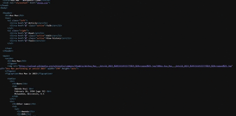
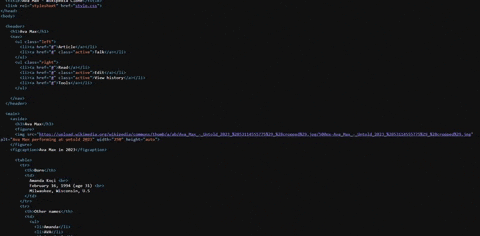
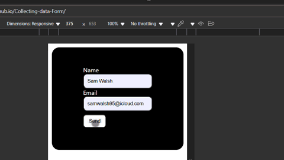
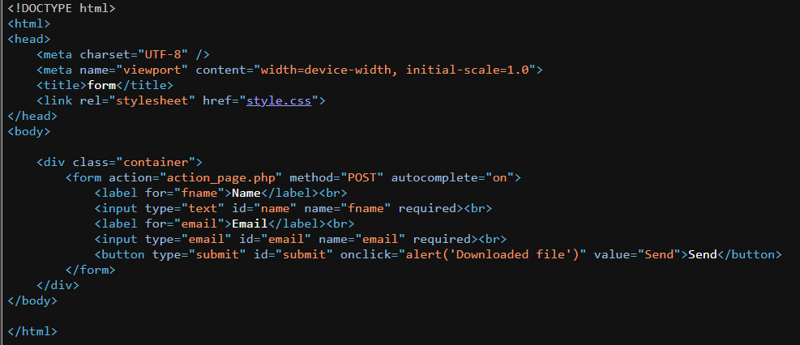

An early project where I recreated a Wikipedia-style page using only HTML and CSS. This helped me practice the basics of page structure, text formatting, and styling before moving on to responsive layouts.
This page showcases some of my early projects where I’ve been experimenting with HTML, CSS, and PHP. From recreating a Wikipedia-style layout to building a form that collects user input, each project has taught me something new and pushed me to improve my skills step by step.
Collecting data
Form


An early project where I recreated a Wikipedia-style page using only HTML and CSS. This helped me practice the basics of page structure, text formatting, and styling before moving on to responsive layouts.